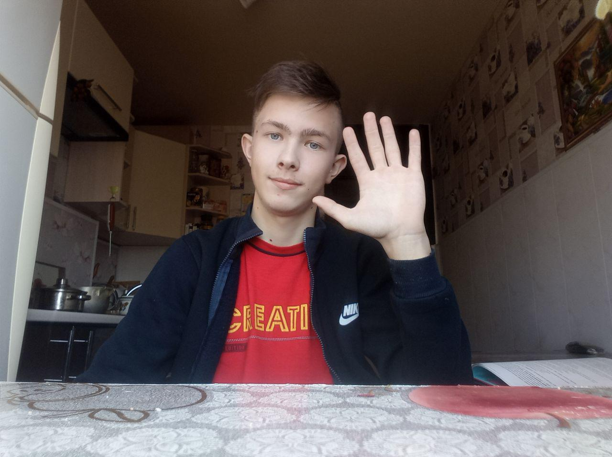

Головна

Привіт! Мене звуть Євгеній Семиволос. На момент створення сайту, мені 15 років.
Я навчаюсь у дніпропетровському фізико-математичному ліцею. (Подробніше у "Навчання")
Я маю такі хобі: шахи, програмування, гра на гітарі та баскетбол.(Подробніше у "Мої захоплення")
На сьогодні мене більш за все цікавить програмування, а з цього випливає, що я хочу стати програмістом. Поки що не знаю, у якій сфері програмування я хочу стати асом, але точно знаю, що буду рухатись у цьому напрямі.
Якщо вам хочеться більше дізнатися про моє життя, то підписуйтеся на мій Інстаграм @The_Semik